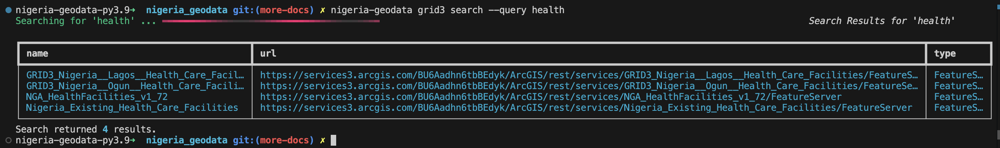
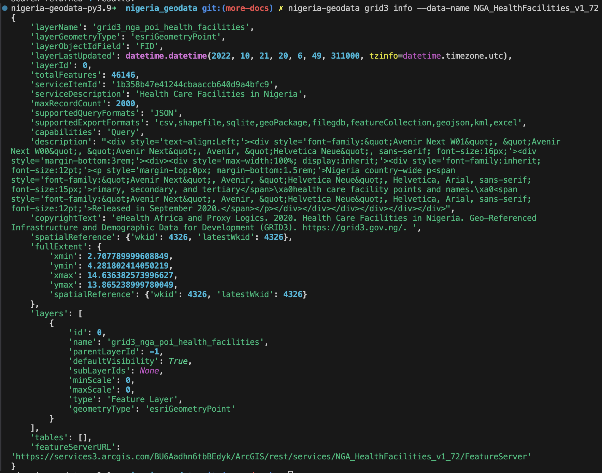

Usage
List all available datasets
By default, if nigeria_geodata finds pandas/geopandas already in your Python environment, it'll use it to render the results as a dataframe/geodataframe. However, you can disable this.
Note: If you require your results as a dataframe/geodataframe, and you don't have it installed in your environment already, you can install the standard version which will install them for you, otherwise it'll throw a PackageNotFoundError. However, you can disable dataframe/geodataframe. More information is provided below.
With dataframe (default)
from nigeria_geodata import Grid3
grid3 = Grid3()
grid3.list_data()
# returns all the available datasets as a dataframe.
Without dataframe
from nigeria_geodata import Grid3
grid3 = Grid3()
grid3.list_data(dataframe=False)
# returns all the available datasets as an array.
Search for a dataset
from nigeria_geodata import Grid3
grid3 = Grid3()
grid3.search(query='Health')
# This will search through the GRDI3 database and return matching datasets.
If you're using the CLI, you'll see something like below. However, if you're using a Jupyter Notebook, you'll see a dataframe. Regardless of the environment, the results are the same.

Get more information about a dataset
After searching for a data of interest, or after viewing all the available datasets using list_data() method, you can then copy the name of the dataset of interest to clipboard. Or you can access it programmatically.
Clipboard
If you copied it to clipboard, just simply paste it here.
from nigeria_geodata import Grid3
grid3 = Grid3()
info = grid3.info(data_name="NGA_HealthFacilities_v1_72") # replace with the name of the dataset of interest
print(info)
Programmatic access
If you got the response above as a dataframe or as a list (depending on whether you set dataframe to True or False). You can simply acess the index of the data you want and grab the name.
from nigeria_geodata import Grid3
grid3 = Grid3()
search_results=grid3.search(query='Health')
info = grid3.info(data_name=search_results[0]['Name']) # assuming the dataset of interest is in the first index.
print(info)

Filter a dataset
Similarly, you can filter a dataset using several parameters.
Bounding box
If you have the bounding box of your area of interest, you can pass it to the filter function.
from nigeria_geodata import Grid3
grid3 = Grid3()
search_results=grid3.search(query='Health')
abuja_healthcare = grid3.filter(data_name=search_results[0]['Name'], bbox = [10.2, 3.4 , 5.6, 6.8]) # assuming Abuja bbox is this.
# print(abuja_healthcare)
State name
In addition to using the bounding box, which sometimes might extend beyong the actual boundary of the State/AOI, you can also use the State name. You can import the provided enum(recommended) from the utils module or you can type it manually (it is case inSEnsiTive).
from nigeria_geodata import Grid3
from nigeria_geodata.utils import NigeriaState
grid3 = Grid3()
search_results=grid3.search(query='Health')
lagos_healthcare = grid3.filter(data_name=search_results[0]['Name'], state = NigeriaState.LAGOS)
# print(lagos_healthcare)
AOI geometry
In addition to using the bounding box, or the state name, you can also use a GeoJSON geometry.
Note: It must be a valid GeoJSON Geometry, and can be of any geometry type.
from nigeria_geodata import Grid3
aoi_geometry = {
"type": "Polygon",
"coordinates": [
[
[-77.0369, 38.9072],
[-77.0369, 38.9172],
[-77.0269, 38.9172],
[-77.0269, 38.9072],
[-77.0369, 38.9072]
]
]
}
grid3 = Grid3()
search_results=grid3.search(query='Health')
aoi_healthcare = grid3.filter(data_name=search_results[0]['Name'], aoi_geometry = aoi_geometry)
# print(aoi_healthcare)
Interactive mapview
One of the interesting feature is an interactive map (powered by Lonboard), which you can use to quickly visualize your dataset. This has only be tested to work in Notebook environment such as Jupyter Notebook.
To enable this, pass preview=True to the filter() method like below:
from nigeria_geodata import Grid3
aoi_geometry = {
"type": "Polygon",
"coordinates": [
[
[-77.0369, 38.9072],
[-77.0369, 38.9172],
[-77.0269, 38.9172],
[-77.0269, 38.9072],
[-77.0369, 38.9072]
]
]
}
grid3 = Grid3()
search_results=grid3.search(query='Health')
aoi_healthcare = grid3.filter(data_name=search_results[0]['Name'], aoi_geometry = aoi_geometry, preview=True)
# print(aoi_healthcare)
Without filters
without passing any filtering parameter, you will still get results, but it'll be for the whole country.
from nigeria_geodata import Grid3
grid3 = Grid3()
search_results=grid3.search(query='Health')
aoi_healthcare = grid3.filter(data_name=search_results[0]['Name'])
# print(aoi_healthcare)
Async
The async module has a similar functionality to the sync method described above, however it is faster and uses a different class like below:
from nigeria_geodata import AsyncGrid3
grid3 = AsyncGrid3()
await grid3.list_data()
# returns all the available datasets as a dataframe.
See benchmark for speed tests of both sync/async.